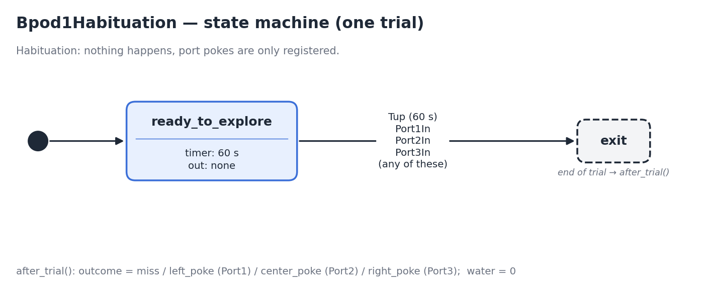

Tasks (Bpod)
With Bpod (BEHAVIOR_CONTROLLER set to BPOD in SETTINGS), every trial is a Bpod
state machine: your task describes the states of the trial, Bpod runs them with its
own precise timing, and everything that happens (states, pokes, timers…) is recorded
automatically.
A task is a class that inherits from TaskBase, in any .py file inside your
project’s code directory. The name of the class is the name of the task: the one
shown in the GUI and used in next_task by the training protocol. The file name
does not matter.
How a task runs
start()is called once, when the session starts, before the first trial. Compute what the whole session needs: valve times, sounds, stimulus positions…Then, trial after trial:
create_trial()is called at the start of every trial. It builds the state machine of the trial withself.bpod.add_state;Bpod runs it, and the task waits until the trial ends. Then
self.trial_datais filled with everything that happened in the trial;after_trial()is called after every trial. It readsself.trial_dataand saves values withregister_value. Registeringwateris mandatory.
close()is called once, when the session ends (session finished, stopped, or error), after the last trial. It can be used to close files or connections.
The session ends when it reaches maximum_duration (set in the training protocol),
when the STOP button is pressed, or when your task sets self.force_stop = True. The
system checks these conditions continuously, not only between trials: if one is met
during a trial, the session ends at once and that trial is cut (it is not saved in the
session file, only in the RAW file). In Manual mode the session also ends after the
number of trials chosen when launching the task.
While Bpod runs a trial your Python code is waiting. Two channels connect the Raspberry Pi and Bpod during the trial: softcodes from Bpod make the Raspberry Pi run a direct function (to play a sound, show an image…), as in Playing a sound, and softcodes from the Raspberry Pi to Bpod let the state machine react to something only the Raspberry Pi sees (the camera, the touchscreen…), see Softcodes.
Register water in every trial
Call self.register_value("water", ...) in every after_trial, with the microliters
delivered in the trial (0 if none). The system adds them up to know how much each
subject drinks, and raises an alarm if it is too little.
A first task: habituation
This is the first task of the example project: the animal is left alone in the box to explore it. Nothing happens and no water is given, but every poke is recorded. Each trial waits up to 60 seconds and ends earlier if the animal pokes any port.
from village.custom_classes.task_base import BpodEvent, TaskBase
class Bpod1Habituation(TaskBase):
def __init__(self):
super().__init__()
self.info = """
Habituation Task (Bpod)
----------------------------------------------------------
This task is an automatic mouse habituation to the box.
Nothing will happen during the task, the mouse will be left alone in the box
for the duration of the task.
Port pokes will be registered but no reward will be delivered.
"""
def start(self):
"""In this simple task we don't need to do anything in the start method."""
pass
def create_trial(self):
"""
This task is very simple, the state machine has only one state
called "ready_to_explore". We give it a 60-second timer and a
timer-up condition (once the timer elapses) that takes us to "exit".
Also, every time there's a poke in any port, we switch to the "exit" state.
"""
self.bpod.add_state(
state_name="ready_to_explore",
state_timer=60,
state_change_conditions={
BpodEvent.Tup: "exit",
BpodEvent.Port1In: "exit",
BpodEvent.Port2In: "exit",
BpodEvent.Port3In: "exit",
},
output_actions=[],
)
def after_trial(self):
"""
Here we look at the trial_data dictionary that bpod records automatically
to find out which events we got.
"""
outcome = "miss"
# for each portIn, we have a list of times at which pokes were registered,
# so we check that there's an entry for that port, that the list of times
# isn't empty, and that the first time is greater than 0 (i.e. not NaN),
# which indicates that a poke happened.
port1 = self.trial_data.get("Port1In")
if port1 and len(port1) > 0 and port1[0] > 0:
outcome = "left_poke"
port2 = self.trial_data.get("Port2In")
if port2 and len(port2) > 0 and port2[0] > 0:
outcome = "center_poke"
port3 = self.trial_data.get("Port3In")
if port3 and len(port3) > 0 and port3[0] > 0:
outcome = "right_poke"
# Register the outcome of the trial and the water consumed
self.register_value("outcome", outcome)
self.register_value("water", 0)
def close(self):
"""
We don't need to do any extra work when the task finishes.
"""
pass
Step by step:
The import.
TaskBaseis the class every task inherits from.BpodEventholds the names of the Bpod events (Tup,Port1In…), andBpodOutput, imported the same way, the names of the outputs (LEDs, valves…). This task has no outputs, so it does not need it.The class name,
Bpod1Habituation, is the name of the task.__init__only setsself.info, the description shown when the task is selected in the GUI. Always callsuper().__init__()first.starthas nothing to prepare in this task.create_trialadds a single state,ready_to_explore:state_timer=60: the state lasts at most 60 seconds. When the timer runs out, Bpod produces the eventTup(“time up”).state_change_conditionssays where to go after each event. Here,Tupand a poke in any of the three ports (Port1In,Port2In,Port3In) all go to"exit", the special name that ends the trial.output_actions=[]: nothing is turned on during the state.
The trial starts in the first state added. This is the state machine:

When the trial ends, the next one starts right away with a new call to
create_trial, until the session ends.after_trialreadsself.trial_datato find out how the trial ended: if there is aPort1In,Port2InorPort3Inevent, the animal poked that port; if not, the timer ran out ("miss"). It saves the result withself.register_value("outcome", outcome), and the water given,0, withself.register_value("water", 0). The checks of the code are more careful than needed:"Port1In" in self.trial_datawould be enough (see the next section).closehas nothing to clean up.
The complete code of this task and the rest of the example project, from habituation to a full discrimination task, are in Task Examples (Bpod).
Trial data
When a trial ends, everything that happened in it is put in self.trial_data, a
dictionary that after_trial reads to decide the outcome of the trial. For example,
a trial of the habituation task in which the animal pokes the center port after
12.3 seconds:
{
"date": "2026-11-07 10:30:00",
"trial": 5,
"subject": "mouse1",
"task": "Bpod1Habituation",
"system_name": "village01",
"TRIAL_START": 1793961045.20,
"TRIAL_END": 1793961057.50,
"STATE_ready_to_explore_START": [1793961045.20],
"STATE_ready_to_explore_END": [1793961057.50],
"Port2In": [1793961057.50],
"ordered_list_of_events": ["Port2In"],
}
If the animal does not poke, there is no Port2In key, and there is a Tup key with
the moment the timer ran out instead.
The keys are:
Key |
Value |
|---|---|
|
Which session and trial it is. |
|
When the trial started and ended. |
|
For every state of the state machine, a list with the times it was entered and left (a list, because a state can be visited several times). A state that was not visited has |
|
For every event that happened, a list with the times of each occurrence. Events that did not happen are not in the dictionary. Events registered with |
|
The names of all the events, in the order they happened. |
All the times are in seconds (UNIX time, the same clock for Bpod and the Raspberry Pi), so they can be compared and subtracted directly.
This is how to get the usual information from it in after_trial (the comments
give the results for the trial above):
import math
def after_trial(self):
# Did an event happen? Its key exists.
center_poke = "Port2In" in self.trial_data # True
# How many times? The length of its list (an empty list if it did not happen).
number_of_pokes = len(self.trial_data.get("Port2In", [])) # 1
# When? The first element of its list.
poke_time = self.trial_data["Port2In"][0] # 1793961057.50
# How long did something take? Subtract two times.
trial_start = self.trial_data["TRIAL_START"]
reaction_time = poke_time - trial_start # 12.3 s
# Was a state visited? Its first start time is not nan.
explored = not math.isnan(self.trial_data["STATE_ready_to_explore_START"][0]) # True
What is saved
At the end of each trial, trial_data, with the values registered in after_trial
(outcome and water in the habituation task), becomes one row of the session
table. When the session ends, two files are saved:
<session>.csv: one row per trial, with a column for each key above and each registered value. It is the file used for the analysis and by the training protocol (self.df). A trial only gets its row when it finishes, so the trial that was running when the session stopped is not in it.<session>_RAW.csv: one line per event, written as they happen, including the trial that was interrupted.
The session is saved if at least one trial was completed. Design the task so that
trials end after a reasonable time even if the animal does nothing (with a Tup
condition, as in the habituation task): a session that is a single trial that never
ends would not be saved.
Delivering water
The valves are Bpod outputs: a valve is open while the state that has it in its
output_actions lasts, so the reward is a state whose timer is the valve time. The
valve time that gives a volume comes from the water calibration of that port.
In this example, the animal gets water every time it pokes the left port:
import math
from village.custom_classes.task_base import BpodEvent, BpodOutput, TaskBase
class PokeForWater(TaskBase):
def start(self):
# the time valve 1 must stay open to deliver reward_volume microliters
self.valve_time = self.calibrations.water_calibration.get_valve_time(
port=1, volume=self.settings.reward_volume
)
def create_trial(self):
self.bpod.add_state(
state_name="wait_poke",
state_timer=60,
state_change_conditions={
BpodEvent.Port1In: "reward",
BpodEvent.Tup: "exit",
},
output_actions=[],
)
self.bpod.add_state(
state_name="reward",
state_timer=self.valve_time,
state_change_conditions={BpodEvent.Tup: "exit"},
output_actions=[BpodOutput.Valve1],
)
def after_trial(self):
rewarded = not math.isnan(self.trial_data["STATE_reward_START"][0])
self.register_value("water", self.settings.reward_volume if rewarded else 0)
def close(self):
pass
startcomputes the valve time once, for the whole session.reward_volumeis a setting defined in the training protocol. The water calibration must exist for port 1, orget_valve_timeraises an error (see Water calibration).In
wait_poke, a poke in the left port goes toreward; if the animal does not poke in 60 seconds, the trial ends.rewardopens valve 1 (BpodOutput.Valve1) forvalve_timeseconds, and then ends the trial.after_trialregisters the water:reward_volumeif the staterewardwas visited,0if not.
Playing a sound
The sound card is connected to the Raspberry Pi, not to Bpod. So the sound is loaded
by the task, before the trial starts, and played during the trial by a direct
function: the state machine asks the Raspberry Pi to run it with a softcode.
BpodOutput.SoftCode4 in the output_actions of a state runs direct function 4 at
the moment the state starts.
This uses two files of your project’s code directory, written by you (the example
project already includes both):
direct_functions.py: a class that inherits fromDirectFunctionsBase, with a methodfunctionNfor each direct function (N from 1 to 98). You choose what each number does. Direct functions can also be run from the GUI or from the triggers, and they can do anything the Raspberry Pi can: draw on the screen, write on the camera image… See Writing Direct Functions.sound_functions.py: functions that generate sounds as NumPy arrays, such astone_generatororwhitenoise_generator. See Sound Functions.
The sound is loaded with sound_device.load and played with sound_device.play
(see Using It in Tasks).
In the example project, direct function 4 plays the sound that is loaded:
from village.custom_classes.direct_functions_base import DirectFunctionsBase
from village.devices.sound_device import sound_device
class DirectFunctions(DirectFunctionsBase):
def function4(self):
"""Play Loaded Sound"""
sound_device.play()
In this example, every trial a tone of a random frequency (5 or 10 kHz) is loaded, and it is played when the animal pokes the center port:
import random
from sound_functions import tone_generator
from village.custom_classes.task_base import BpodEvent, BpodOutput, TaskBase
from village.devices.sound_device import sound_device
class PokeForSound(TaskBase):
def start(self):
pass
def create_trial(self):
# load this trial's sound before the trial starts
self.frequency = random.choice([5000, 10000])
sound = tone_generator(duration=0.5, gain=0.05, frequency=self.frequency)
sound_device.load(left=sound, right=sound)
self.bpod.add_state(
state_name="wait_poke",
state_timer=60,
state_change_conditions={
BpodEvent.Port2In: "sound",
BpodEvent.Tup: "exit",
},
output_actions=[],
)
self.bpod.add_state(
state_name="sound",
state_timer=0.5,
state_change_conditions={BpodEvent.Tup: "exit"},
output_actions=[BpodOutput.SoftCode4], # runs direct function 4
)
def after_trial(self):
self.register_value("frequency", self.frequency)
self.register_value("water", 0)
def close(self):
pass
create_trialruns before Bpod starts the trial, so it is the place to load the sound of each trial. Loading takes longer the longer the sound is; playing a loaded sound starts at once.self.frequencyis an attribute of the task, soafter_trialcan register it.gain=0.05is an arbitrary volume. To play the sound at a given level in dB, use the sound calibration (see Sound).When the sound starts playing, the system adds a
soundevent totrial_data.